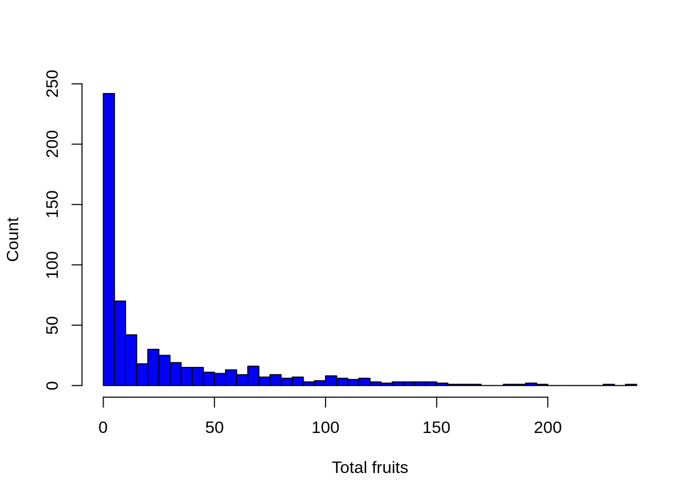
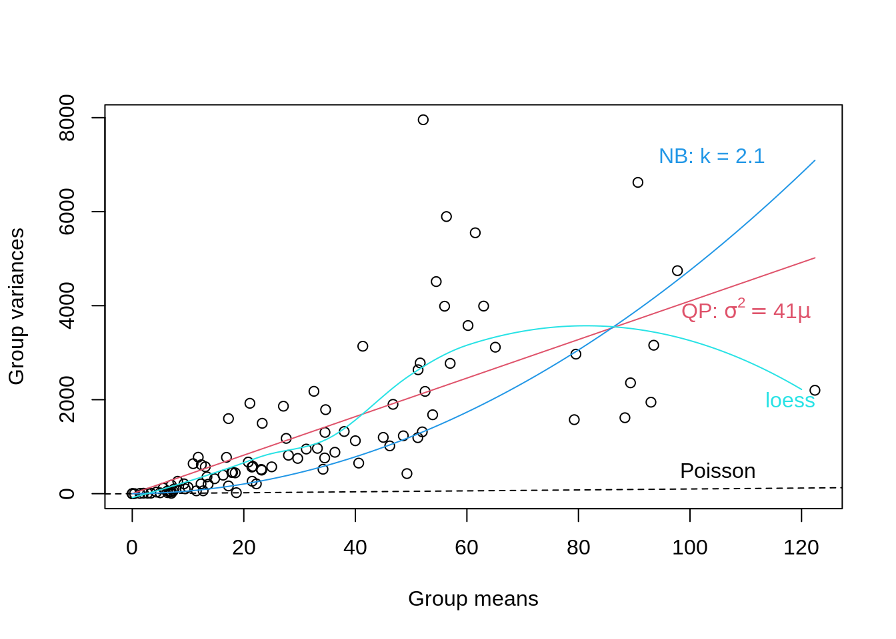

Chapter 14 Choose an error distribution
Now we need to select an error distribution. This choice will be informed by the structure of our data.
In the Arabidopsis dataset, the response variable is count data which suggests we need a Poisson distribution (i.e. the variance is equal to the mean).
Let’s take a look:
# Before we go any further, we need to select an error
# distribution. This choice will be informed by the structure
# of our data. Our response variable is count data which
# suggests we need a Poisson distribution (i.e. the variance
# is equal to the mean).
hist(dat.tf$total.fruits, breaks = 50, col = "blue", main = "",
xlab = "Total fruits", ylab = "Count")
However, as we will soon see, the variance increases with the mean much more rapidly than expected under the Poisson distribution…
Explore variance
Let’s take a closer look at the variance within our data.
To illustrate heterogeneity in variance we will first create boxplots of the log of total fruit production (response variable) versus different environmental factors.
Let’s create new variables that represent every combination of nutrient x clipping x random factor
# Let's explore the variance within our data Create new
# variables that represent every combination of variables
dat.tf <- within(dat.tf, {
# genotype x nutrient x clipping
gna <- interaction(gen, nutrient, amd)
gna <- reorder(gna, total.fruits, mean)
# population x nutrient x clipping
pna <- interaction(popu, nutrient, amd)
pna <- reorder(pna, total.fruits, mean)
})Now let’s visualize:
library(ggplot2)
# Boxplot of total fruits vs genotype x nutrient x clipping interaction
ggplot(data = dat.tf, aes(factor(x = gna), y = log(total.fruits + 1))) +
geom_boxplot(colour = "skyblue2", outlier.shape = 21,
outlier.colour = "skyblue2") +
ylab("log (Total fruits)\n") + # \n creates a space after the title
xlab("\nGenotype x nutrient x clipping") + # space before the title
theme_bw() + theme(axis.text.x = element_blank()) +
stat_summary(fun = mean, geom = "point", colour = "red")
From this plot, we see that the variance of total fruits shows a large amount of heterogeneity among populations (population x nutrient x clipping interaction).
Back to choosing an error distribution
As we just saw, there is a large amount of heterogeneity among group variances even when the response variable is transformed (i.e. log).
To determine which distribution family to use, we can run a diagnostic plot of the group variances vs group means. We provide an example below for the genotype x nutrient x clipping grouping.
- If we observe a linear relationship between the variance and the mean with a slope = 1, then the Poisson family is appropriate,
- If we observe a linear mean-variance relationship with a slope > 1 (i.e. Var = φµ where φ > 1), then the quasi-Poisson family (as introduced above) should be applied,
- Finally, a quadratic relationship between the variance and the mean (i.e. \(Var = µ(1 + α) or µ(1 + µ/k)\)) is characteristic of overdispersed data that is driven by an underlying heterogeneity among samples. In this case, the negative binomial (Poisson-gamma) would be more appropriate.
## Run a diagnostic lot of the group variances vs group means
## (genotype x nutrient x clipping grouping). Code used to
## produce the plot :
## https://github.com/QCBSRworkshops/workshop07/blob/main/pres-fr/data/glmm_e.r
## Substantial variation among the sample variances on the
## transformed data For example, among genotypes:
grpVars <- tapply(dat.tf$total.fruits, dat.tf$gna, var)
grpMeans <- tapply(dat.tf$total.fruits, dat.tf$gna, mean)
# Quasi-Poisson
lm1 <- lm(grpVars ~ grpMeans - 1)
phi.fit <- coef(lm1)
# The -1 specifies a model with the intercept set to zero
# Negative binomial
lm2 <- lm(grpVars ~ I(grpMeans^2) + offset(grpMeans) - 1)
k.fit <- 1/coef(lm2)
# The offset() is used to specify that we want the group
# means added as a term with its coefficient fixed to 1
# Non-parametric loess fit
Lfit <- loess(grpVars ~ grpMeans)
# The plot
plot(grpVars ~ grpMeans, xlab = "Group means", ylab = "Group variances")
abline(a = 0, b = 1, lty = 2)
text(105, 500, "Poisson")
curve(phi.fit * x, col = 2, add = TRUE)
# bquote() is used to substitute numeric values in equations
# with symbols
text(110, 3900, bquote(paste("QP: ", sigma^2 == .(round(phi.fit,
1)) * mu)), col = 2)
curve(x * (1 + x/k.fit), col = 4, add = TRUE)
text(104, 7200, paste("NB: k = ", round(k.fit, 1), sep = ""),
col = 4)
mvec <- 0:120
lines(mvec, predict(Lfit, mvec), col = 5)
text(118, 2000, "loess", col = 5)
From the plot above we note that a linear quasi-Poisson may be better than the negative binomial, but additional modeling is needed.